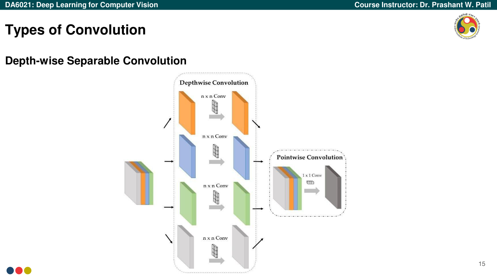
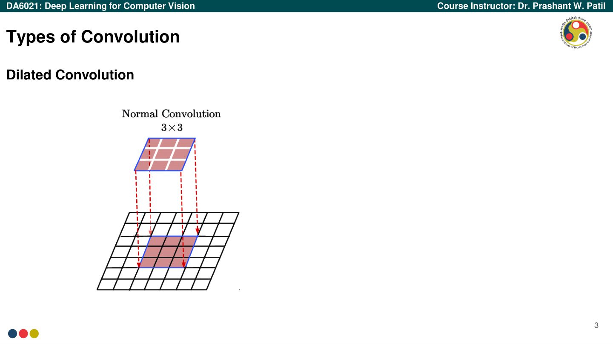

DA6021
Deep Learning for Computer Vision
Complete Examination Handbook
How to Use This Handbook
This handbook is designed to serve as a complete, standalone study resource for examination preparation. It replaces the need to repeatedly consult the original lecture slides by preserving all examination-relevant content in an organized, searchable, and cross-referenced format.
Visual Tags & Their Meaning
| Tag | Meaning | Action |
|---|
| Must Know | Essential for exam. Guaranteed to appear. | Memorize and practice. |
| High Importance | Very likely to appear in some form. | Understand thoroughly. |
| Numerical | Can become a numerical problem. | Practice calculations. |
| Derivation | May be asked to derive. | Practice writing step-by-step. |
| Conceptual | Theory/reasoning question likely. | Understand the "why". |
| Memorize | Must be recalled exactly. | Write out repeatedly. |
| Common Mistake | Frequent student error. | Read carefully. |
Block Types
Definition
Key terms and formal definitions from the course.
Exam Tip
Actionable advice for examination performance.
Common Mistake
Errors frequently made by students — avoid these.
Handbook Organization
- Part I — Fundamentals: Computer Vision introduction, Perceptrons, Neural Networks
- Part II — Core CNN Content: Convolution operations, Padding, Pooling, Receptive Fields, Computational Complexity
- Part III — Advanced Topics: Convolution variants, Upsampling, Architectures, Normalization, Encoder-Decoders
- Part IV — Formula Handbook: All equations consolidated
- Part V — Derivations: Step-by-step derivation guides
- Part VI — Numerical Problem Guide: Solution templates with worked examples
- Part VII — Visual Reference: Key figures and their interpretations
- Part VIII — Tables & Comparisons: Architecture comparisons, technique comparisons
- Part IX — Glossary: Complete terminology reference
- Part X — Exam Revision: Last-minute revision checklist
Master Topic Map
Lecture Coverage
| Lectures | Topic | Key Content | Exam Weight |
|---|
| L01–02 | Introduction to Computer Vision | Paradigms, Applications, Subtasks, Challenges | Supporting |
| L03–07 | Basics of Neural Networks | Perceptron, Convergence Proof, Sigmoid, Backpropagation | Must Know |
| L08–09 | Basics of CNNs | 2D Convolution, Padding, Pooling, RF, Parameters, FLOPs | Must Know |
| L10–11 | Types of Convolutions | Dilated, Depthwise Separable, Transpose, Deformable, Upsampling | High |
| L12 | CNN Backpropagation | Forward/Backward pass through CNN layers, Chain Rule | High |
| L13–14 | State-of-the-Art Architectures I | LeNet-5, AlexNet, VGG-16, GoogLeNet/Inception | High |
| L15–16 | State-of-the-Art Architectures II | ResNet, DenseNet, MobileNet, EfficientNet, Normalization | High |
| L17–19 | Encoder-Decoder Architectures | SegNet, U-Net, DeepLabv3+, Semantic Segmentation | Must Know |
Concept Dependency Chain
Understanding flows in this order — each topic builds on the previous:
- Linear Algebra & Geometry → Perceptron decision boundaries
- Perceptron & Convergence → Why sigmoid neurons and MLPs are needed
- Gradient Descent & Chain Rule → Backpropagation algorithm
- Backpropagation → Training CNNs end-to-end
- 2D Convolution basics → Receptive fields → Types of convolutions
- Vanishing gradients (Backprop issue) → Normalization techniques → ResNet skip connections
- Computational complexity → Efficient architectures (MobileNet, EfficientNet)
- Convolution → Pooling (downsampling) → Spatial information loss → Encoder-Decoder architectures
- Upsampling techniques → SegNet (max unpooling), U-Net (skip connections), DeepLab (ASPP)
Part I: Foundations of Neural Networks
Chapter 1: Introduction to Computer Vision
1.1 What is Computer Vision?
Computer Vision is a subfield of AI focused on visual understanding. It aims to grant computers the high-level understanding of digital images or videos, much like human vision.
1.2 Paradigms of Computer Vision
There are three core paradigms in understanding computer vision:
- Physics-based (Image Formation): Focuses on how light interacts with the world and sensors to form an image.
- Geometry-based (Image Structure): Focuses on the spatial structures, shapes, and 3D relationships within images.
- Learning-based (Perception): Uses data-driven learning (e.g., neural networks) to recognize and interpret visual concepts.
1.3 Applications
Computer Vision has profound applications across various industries:
- Surveillance: Crowd monitoring, anomaly detection.
- Autonomous Driving: Lane detection, pedestrian tracking, traffic sign recognition.
- Traffic Monitoring: Vehicle counting, speed estimation.
- Healthcare: Medical imaging analysis (MRI, X-ray), tumor detection.
- Agriculture: Crop monitoring, disease detection.
- Underwater & Space: Subsea exploration, satellite imagery analysis.
- Gaming & Robotics: Pose estimation, human-computer interaction.
1.4 Core Subtasks
Definition: Core Subtasks
- Image Segmentation: Partitioning an image into multiple segments (pixel-wise classification).
- Object Detection: Identifying bounding boxes and classes for multiple objects in an image.
- Object Recognition: Identifying the primary object category present in an image.
- Object Tracking: Following an object's location across a sequence of video frames.
- Image Captioning: Generating a textual description of an image.
- Super-resolution: Enhancing the resolution and quality of a low-resolution image.
- Depth Estimation: Predicting the distance of objects from the camera viewpoint.
1.5 What Makes Vision Hard?
Important Note: Challenges
Vision is an
inverse problem—trying to reconstruct a 3D world from a 2D projection. This is inherently ill-posed. Key challenges include:
- Lots of data: High-resolution images contain millions of pixels.
- Visual illusions: Ambiguities in perspective and shading.
- Viewpoint variation: Objects look entirely different from different angles.
- Illumination conditions: Lighting changes drastically alter pixel values.
- Deformation: Non-rigid objects (e.g., animals) change shape.
- Occlusion: Objects can be partially hidden.
- Background clutter: Objects blending into the environment.
- Intraclass variation: High variance within a single class (e.g., different breeds of dogs).
1.6 Limitations of Artificial Neural Networks (ANNs) for Vision
Before Convolutional Neural Networks, standard Feed-Forward ANNs were used, but they had severe limitations for images:
- Feature extraction and learning: Real-world data like 256x256 images creates massive fully connected weight matrices (e.g., ~66 Million parameters for a small deep network).
- Computational Complexity: Excessive parameter count makes it computationally expensive.
- Lack of Invariance: Little or no invariance to shifting, scaling, and other forms of distortion in images (e.g., shifting an object in an image completely alters the input vector).
Chapter 2: Perceptron & McCulloch-Pitts Neuron
2.1 Definitions and Concepts
Definition: Perceptron
The simplest type of artificial neural network and a fundamental building block of deep learning. Introduced by Frank Rosenblatt in 1958, it is a binary classifier that learns to separate data into two classes using a linear decision boundary.
Important Note: MP Neuron vs Perceptron
Both separate the input space into two halves and can only implement linearly separable functions. However, in a Perceptron, weights and thresholds can be learned, and inputs can be real-valued, whereas the MP neuron uses fixed weights and binary inputs.
2.2 Visual Descriptions
- Perceptron Model: A node \( y \) receiving inputs \( x_1, x_2, \dots, x_n \) weighted by \( w_1, w_2, \dots, w_n \).
- Boolean Function Space: A 2D coordinate space \( (x_1, x_2) \) with points (0,0), (1,0), (0,1), (1,1).
- Decision Boundary: A linear separation line splitting the plane into positive and negative half-spaces.
2.3 Worked Example: Boolean Function (OR) with Perceptron
Example: Implementing the OR function
Truth Table Analysis:
- (0,0) → 0 ⇒ \( w_0 + w_1 \cdot 0 + w_2 \cdot 0 < 0 \implies w_0 < 0 \)
- (1,0) → 1 ⇒ \( w_0 + w_1 \cdot 1 + w_2 \cdot 0 \ge 0 \implies w_1 \ge -w_0 \)
- (0,1) → 1 ⇒ \( w_0 + w_1 \cdot 0 + w_2 \cdot 1 \ge 0 \implies w_2 \ge -w_0 \)
- (1,1) → 1 ⇒ \( w_0 + w_1 \cdot 1 + w_2 \cdot 1 \ge 0 \implies w_1 + w_2 \ge -w_0 \)
Possible Solution: Let \( w_0 = -1, w_1 = 1.1, w_2 = 1.1 \).
Line equation: \( -1 + 1.1x_1 + 1.1x_2 = 0 \).
Error Surfaces Cases
Case 1: \( w_0 = -1, w_1 = 1.1, w_2 = 1.1 \) (Zero error, valid separation).
Case 2: \( w_0 = -1, w_1 = -1, w_2 = -1 \) (Line: \( -1 - x_1 - x_2 = 0 \)). Incorrect.
Case 3: \( w_0 = -1, w_1 = 1.5, w_2 = 0 \) (Line: \( -1 + 1.5x_1 + 0x_2 = 0 \)). Incorrect.
Case 4: \( w_0 = -1, w_1 = 0.45, w_2 = 0.45 \) (Line: \( -1 + 0.45x_1 + 0.45x_2 = 0 \)). Incorrect.
Chapter 3: Perceptron Learning Algorithm
3.1 Objectives and Geometry
Objective: Find the line \( \mathbf{w}^T\mathbf{x} = 0 \) dividing the input space into two halves. The angle \( \alpha \) between \( \mathbf{w} \) and any point \( \mathbf{x} \) on the line is 90° (\( \cos\alpha = \frac{\mathbf{w}^T\mathbf{x}}{|\mathbf{w}||\mathbf{x}|} = 0 \)).
- For points in the positive half space (\( \mathbf{w}^T\mathbf{x} \ge 0 \)), the angle with \( \mathbf{w} \) is \( \le 90^\circ \).
- For points in the negative half space (\( \mathbf{w}^T\mathbf{x} < 0 \)), the angle with \( \mathbf{w} \) is \( > 90^\circ \).
3.2 Algorithm Formulation
Perceptron Learning Algorithm
Let P = inputs with label 1; N = inputs with label 0.
Initialize \( \mathbf{w} \) randomly.
while !convergence do
Pick random \( \mathbf{x} \in P \cup N \);
if \( \mathbf{x} \in P \) and \( \sum_{i=0}^{n} w_i \cdot x_i < 0 \) then
\( \mathbf{w}_{new} = \mathbf{w}_{old} + \mathbf{x} \);
end if
if \( \mathbf{x} \in N \) and \( \sum_{i=0}^{n} w_i \cdot x_i \ge 0 \) then
\( \mathbf{w}_{new} = \mathbf{w}_{old} - \mathbf{x} \);
end if
end while
(Algorithm converges when all inputs are classified correctly).
3.3 Derivations & Justifications
Correction for False Negatives: If \( \mathbf{x} \in P \) but \( \mathbf{w}^T\mathbf{x} < 0 \) (angle \( \alpha > 90^\circ \)). We want it to be \( < 90^\circ \).
Correction for False Positives: If \( \mathbf{x} \in N \) but \( \mathbf{w}^T\mathbf{x} \ge 0 \) (angle \( \alpha < 90^\circ \)). We want it to be \( > 90^\circ \).
3.4 Proof of Perceptron Convergence
Proposition: If sets \( P \) and \( N \) are finite and linearly separable, the algorithm updates \( \mathbf{w} \) a finite number of times (converges in finite steps \( k \)).
Definition: Linearly separable if \( \exists \mathbf{w}^* \) s.t. \( \mathbf{w}^{*T}\mathbf{x} \ge 0 \;\forall \mathbf{x} \in P \) and \( \mathbf{w}^{*T}\mathbf{x} < 0 \;\forall \mathbf{x} \in N \).
Proof Steps
Setup 1: Normalize all vectors \( p \). Let \( \mathbf{w}^* \) be the normalized solution vector.
Setup 2: If \( x \in N \), let \( p = -x \in P \) (since \( \mathbf{w}^T x < 0 \implies \mathbf{w}^T(-x) \ge 0 \)). Create a single set \( P' = P \cup N^- \). Ensure \( \mathbf{w}^Tp \ge 0 \; \forall p \in P' \).
Setup 3: Update rule becomes: Pick \( p \in P' \), if \( \mathbf{w}^Tp < 0 \), \( \mathbf{w}_{t+1} = \mathbf{w}_t + p \).
Proof Body: Let \( \beta \) be angle between \( \mathbf{w}^* \) and \( \mathbf{w}_{t+1} \): \( \cos\beta = \frac{\mathbf{w}^* \cdot \mathbf{w}_{t+1}}{|\mathbf{w}_{t+1}|} \).
Numerator:
\( \mathbf{w}^* \cdot \mathbf{w}_{t+1} = \mathbf{w}^* \cdot (\mathbf{w}_t + p_i) = \mathbf{w}^* \cdot \mathbf{w}_t + \mathbf{w}^* \cdot p_i \ge \mathbf{w}^* \cdot \mathbf{w}_t + \delta \) (where \( \delta = \min \mathbf{w}^* \cdot p_i \; \forall i \)).
After \( k \) corrections: Numerator \( \ge \mathbf{w}^* \cdot \mathbf{w}_0 + k\delta \).
Denominator:
\( |\mathbf{w}_{t+1}|^2 = (\mathbf{w}_t + p_i) \cdot (\mathbf{w}_t + p_i) = |\mathbf{w}_t|^2 + 2\mathbf{w}_t \cdot p_i + |p_i|^2 \).
Since an error occurred, \( \mathbf{w}_t \cdot p_i \le 0 \). Since normalized, \( |p_i|^2 = 1 \).
\( |\mathbf{w}_{t+1}|^2 \le |\mathbf{w}_t|^2 + 1 \).
After \( k \) corrections: Denominator\(^2 \le |\mathbf{w}_0|^2 + k \).
Conclusion:
\( \cos\beta \ge \frac{\mathbf{w}^* \cdot \mathbf{w}_0 + k\delta}{\sqrt{|\mathbf{w}_0|^2 + k}} \).
This grows proportional to \( \sqrt{k} \). Since \( \cos\beta \le 1 \), \( k \) must be bounded by a maximum number. Thus, finite number of corrections.
Chapter 4: Network of Perceptrons & Non-Linear Functions
4.1 The XOR Contradiction
A single perceptron cannot implement non-linearly separable functions like XOR.
XOR Contradiction
For XOR, we require:
- (0,0) → 0 ⇒ \( w_0 < 0 \)
- (1,0) → 1 ⇒ \( w_1 \ge -w_0 \)
- (0,1) → 1 ⇒ \( w_2 \ge -w_0 \)
- (1,1) → 0 ⇒ \( w_1 + w_2 < -w_0 \)
However, adding equations 2 and 3 yields \( w_1 + w_2 \ge -2w_0 \), which directly contradicts equation 4 since \( -2w_0 > -w_0 \) for \( w_0 < 0 \).
4.2 Multilayer Perceptrons (MLP)
Definition: Multilayer Perceptron (MLP)
A network containing an input layer, one or more hidden layers, and an output layer.
Theorem: Boolean Function Capacity
For \( n \) inputs, there are \( 2^{2^n} \) possible boolean functions. A network of perceptrons with 1 hidden layer containing \( 2^n \) perceptrons and 1 output perceptron can represent exactly ANY Boolean function of \( n \) inputs. (\( 2^n+1 \) perceptrons is sufficient, though not strictly necessary).
4.3 Worked Example: XOR with MLP
Example: Solving XOR
- Inputs: 2 Inputs (\( x_1, x_2 \)). True = →1, False = -1.
- Hidden Layer: 4 Hidden Perceptrons (\( h_1, \dots, h_4 \)). Bias for all \( w_0 = -2 \) (fires if sum \( \ge 2 \)).
- Hidden Nodes: Weights corresponding to 4 input states: (-1,-1), (-1,1), (1,-1), (1,1). Acting as AND gates.
- Output Layer: Bias \( w_0 = -2 \). Fires if \( \sum w_i h_i \ge w_0 \).
- Output Weights: To get XOR output (0, 1, 1, 0), the output weights must satisfy:
\( w_1 < w_0 \), \( w_2 \ge w_0 \), \( w_3 \ge w_0 \), \( w_4 < w_0 \).
Chapter 5: Sigmoid Neuron & Feed-Forward Neural Networks
5.1 The Sigmoid Neuron
Why Sigmoid? The Perceptron step-function threshold is too harsh (e.g., rating 0.51 passes, 0.49 fails). The Sigmoid provides smooth, continuous, and differentiable transitions. Output is a real value \( (0,1) \) interpreted as probability.
5.2 Supervised Learning Setup
- Data: \( \{x_i, y_i\}_{i=1}^n \)
- Model: \( \hat{y} = \frac{1}{1 + e^{-\mathbf{w}^Tx}} \)
- Parameters: \( \mathbf{w} \)
- Loss Function (MSE): \( \mathcal{L}(\mathbf{w}) = \frac{1}{N} \sum_{i=1}^n (\hat{y}_i - y_i)^2 \)
- Algorithm: Gradient Descent.
5.3 Feed-Forward Neural Networks
Connections do not form cycles; data flows strictly from input to output.
- Layers: Input layer (\( 0^{th} \) layer), Hidden layers \( 1 \) to \( L-1 \), Output layer (\( L^{th} \) layer).
- Pre-activation: \( \mathbf{a}_i = \mathbf{W}_i \mathbf{h}_{i-1} + \mathbf{b}_i \)
- Post-activation: \( \mathbf{h}_i = g(\mathbf{a}_i) \) (\( g \) = activation function like sigmoid, tanh, ReLU).
- Output: \( f(\mathbf{x}) = \mathbf{h}_L = O(\mathbf{a}_L) \) (\( O \) = output activation like Softmax).
Chapter 6: Backpropagation
6.1 Worked Example: Forward & Backward Pass
Network Setup
- Inputs: \( i_1 = 0.05, i_2 = 0.10 \). Target Outputs: \( t_1 = 0.01, t_2 = 0.99 \).
- Architecture: 1 Hidden Layer (2 neurons, \( h_1, h_2 \)), 1 Output Layer (2 neurons, \( o_1, o_2 \)).
- Initial Weights (Input → Hidden): \( w_1=0.15, w_2=0.25, w_3=0.20, w_4=0.30 \).
- Initial Weights (Hidden → Output): \( w_5=0.40, w_6=0.45, w_7=0.50, w_8=0.55 \).
- Initial Biases: \( b_1=0.35 \) (Hidden), \( b_2=0.60 \) (Output).
Step-by-step Solution
Forward Pass:
\( net_{h1} = w_1 i_1 + w_3 i_2 + b_1 = 0.15(0.05) + 0.20(0.10) + 0.35 = 0.3775 \)
\( out_{h1} = \sigma(net_{h1}) = 1 / (1 + e^{-0.3775}) = 0.5933 \)
\( net_{h2} = 0.3975 \implies out_{h2} = 0.5981 \)
\( net_{o1} = w_5 out_{h1} + w_7 out_{h2} + b_2 = 0.40(0.5933) + 0.50(0.5981) + 0.60 = 1.1364 \)
\( out_{o1} = \sigma(net_{o1}) = 0.7570 \)
\( net_{o2} = 1.1959 \implies out_{o2} = 0.7678 \)
Error Calculation:
\( E_{total} = \frac{1}{2} \sum (t_i - out_i)^2 = E_{o1} + E_{o2} \)
\( E_{o1} = \frac{1}{2}(0.01 - 0.7570)^2 = 0.2790 \)
\( E_{o2} = \frac{1}{2}(0.99 - 0.7678)^2 = 0.0247 \)
\( E_{total} = 0.3037 \)
Backward Pass (Output Layer Update for \( w_5 \)):
Chain Rule: \( \frac{\partial E_{total}}{\partial w_5} = \frac{\partial E_{total}}{\partial out_{o1}} \cdot \frac{\partial out_{o1}}{\partial net_{o1}} \cdot \frac{\partial net_{o1}}{\partial w_5} \)
\( \frac{\partial E_{total}}{\partial out_{o1}} = -(t_1 - out_{o1}) = -(0.01 - 0.7570) = 0.7470 \)
\( \frac{\partial out_{o1}}{\partial net_{o1}} = out_{o1}(1 - out_{o1}) = 0.7570(1 - 0.7570) = 0.1839 \)
\( \frac{\partial net_{o1}}{\partial w_5} = out_{h1} = 0.5933 \)
\( \frac{\partial E_{total}}{\partial w_5} = 0.7470 \times 0.1839 \times 0.5933 = 0.0815 \)
Update (Learning Rate \( \eta=0.5 \)): \( w_5^{new} = w_5 - \eta \frac{\partial E_{total}}{\partial w_5} = 0.40 - 0.5(0.0815) = 0.3592 \)
Similarly: \( w_6^{new}=0.4617 \), \( w_7^{new}=0.4589 \), \( w_8^{new}=0.5618 \).
Bias updates: \( \frac{\partial net_{o1}}{\partial b_{21}} = 1 \). \( \frac{\partial E}{\partial b_{21}} = 0.7470 \times 0.1839 \times 1 = 0.1374 \implies b_{21}^{new} = 0.5313 \). \( b_{22}^{new} = 0.6197 \).
Backward Pass (Hidden Layer Update for \( w_1 \)):
\( \frac{\partial E_{total}}{\partial w_1} = \frac{\partial E_{total}}{\partial out_{h1}} \cdot \frac{\partial out_{h1}}{\partial net_{h1}} \cdot \frac{\partial net_{h1}}{\partial w_1} \)
\( \frac{\partial E_{total}}{\partial out_{h1}} = \frac{\partial E_{o1}}{\partial out_{h1}} + \frac{\partial E_{o2}}{\partial out_{h1}} = \left( \frac{\partial E_{o1}}{\partial net_{o1}}\frac{\partial net_{o1}}{\partial out_{h1}} \right) + \left( \frac{\partial E_{o2}}{\partial net_{o2}}\frac{\partial net_{o2}}{\partial out_{h1}} \right) \)
Component 1: \( \frac{\partial E_{o1}}{\partial net_{o1}} = 0.1374 \). \( \frac{\partial net_{o1}}{\partial out_{h1}} = w_5 = 0.40 \). Product = \( 0.05496 \).
Component 2: \( \frac{\partial E_{o2}}{\partial net_{o2}} = -0.0396 \). \( \frac{\partial net_{o2}}{\partial out_{h1}} = w_6 = 0.45 \). Product = \( -0.01782 \).
\( \frac{\partial E_{total}}{\partial out_{h1}} = 0.05496 - 0.01782 = 0.0371 \).
\( \frac{\partial out_{h1}}{\partial net_{h1}} = out_{h1}(1 - out_{h1}) = 0.2413 \).
\( \frac{\partial net_{h1}}{\partial w_1} = i_1 = 0.05 \).
\( \frac{\partial E_{total}}{\partial w_1} = 0.0371 \times 0.2413 \times 0.05 = 0.00045 \).
Update: \( w_1^{new} = 0.15 - 0.5(0.00045) = 0.1497 \).
6.2 General Formulas & Derivations
- Gradients w.r.t Output Units (Cross Entropy → Softmax):
Loss \( \mathcal{L}(\theta) = -\log(\hat{y}_l) \) where \( l \) is true class.
\( \frac{\partial \mathcal{L}}{\partial \hat{y}_i} = -1/\hat{y}_l \) if \( i=l \) else \( 0 \). Vector form: \( \nabla_{\hat{y}} \mathcal{L} = -\frac{1}{\hat{y}_l} \mathbf{e}^{(l)} \).
\( \frac{\partial \mathcal{L}}{\partial a_L^i} = -(1_{l=i} - \hat{y}_i) \). Vector form: \( \nabla_{\mathbf{a}_L} \mathcal{L} = -(\mathbf{e}_l - \hat{y}) \).
- Gradients w.r.t Hidden Units:
\( \frac{\partial \mathcal{L}}{\partial h_{i,j}} = \sum_{m} \frac{\partial \mathcal{L}}{\partial a_{i+1,m}} \frac{\partial a_{i+1,m}}{\partial h_{i,j}} = \sum_{m} \frac{\partial \mathcal{L}}{\partial a_{i+1,m}} W_{i+1,m,j} \)
Vector form: \( \nabla_{\mathbf{h}_i} \mathcal{L} = \mathbf{W}_{i+1}^T \nabla_{\mathbf{a}_{i+1}} \mathcal{L} \).
\( \nabla_{\mathbf{a}_i} \mathcal{L} = \nabla_{\mathbf{h}_i} \mathcal{L} \odot g'(\mathbf{a}_i) \).
- Gradients w.r.t Parameters:
\( \frac{\partial \mathcal{L}}{\partial \mathbf{W}_k} = \nabla_{\mathbf{a}_k} \mathcal{L} \cdot \mathbf{h}_{k-1}^T \).
\( \frac{\partial \mathcal{L}}{\partial \mathbf{b}_k} = \nabla_{\mathbf{a}_k} \mathcal{L} \).
Part II: Convolutional Neural Networks
Chapter 7: Basics of CNNs
7.1 Fundamental Purpose & Principles
The fundamental purpose of performing convolution is to extract useful, representative, and hierarchical spatial features from the input tensor. Unlike classical vision with hand-engineered filters, CNN filter weights are learnable parameters optimized end-to-end.
7.2 2D Convolution Operation
The Full Depth Rule
Filters always extend the full depth of the input volume. If the input has depth \( C_{in} \), a 2D convolution filter MUST have depth equal to \( C_{in} \). E.g., a \( 5 \times 5 \) filter on an RGB image (\( C_{in} = 3 \)) has \( 5 \times 5 \times 3 = 75 \) spatial-channel weights.
7.3 Spatial Information Loss & Padding
Without padding, feature maps shrink by \( (K - 1) \) pixels per layer, and boundary pixels are under-represented. Padding introduces a border to preserve dimensions.
- Zero Padding: Filled with zeros. Can create artificial black edges.
- Replicate Padding: Border pixels replicated outward. Avoids harsh intensity drops.
7.4 Output Dimension & Parameter Formulas
7.5 Pooling Operations
Pooling downsamples spatial dimensions independently per channel. Pooling layers have 0 learnable parameters.
Max vs Average Pooling Example (2x2, Stride 2)
Given a \( 4 \times 4 \) matrix:
\[
X = \begin{bmatrix}
8 & 7 & 5 & 3 \\
12 & 9 & 5 & 7 \\
13 & 2 & 10 & 3 \\
9 & 4 & 5 & 14
\end{bmatrix}
\]
Max Pooling: Extracts the max from each \( 2 \times 2 \) quadrant.
\[
Y_{Max} = \begin{bmatrix} 12 & 7 \\ 13 & 14 \end{bmatrix}
\]
Average Pooling: Computes the mean for each quadrant.
\[
Y_{Avg} = \begin{bmatrix} 9 & 5 \\ 7 & 8 \end{bmatrix}
\]
Chapter 8: Receptive Fields
8.1 Definition
Definition: Receptive Field
The specific spatial region of the original input image that can directly or indirectly influence a given neuron's activation value.
8.2 Worked Examples
Example 1: 4 Conv Layers, Stride 1 (Linear Growth)
Initial: \( R_0 = 1, j_0 = 1 \)
Layer 1 (\( K=3, S=1 \)): \( RF_1 = 1 + (3 - 1) \times 1 = 3 \). \( j_1 = 1 \times 1 = 1 \).
Layer 2 (\( K=3, S=1 \)): \( RF_2 = 3 + (3 - 1) \times 1 = 5 \). \( j_2 = 1 \times 1 = 1 \).
Layer 3 (\( K=3, S=1 \)): \( RF_3 = 5 + 2 = 7 \). \( j_3 = 1 \).
Layer 4 (\( K=3, S=1 \)): \( RF_4 = 7 + 2 = 9 \). \( j_4 = 1 \).
Final RF: \( 9 \times 9 \)
Example 2: 4 Conv Layers, Stride 2 (Exponential Growth)
Initial: \( R_0 = 1, j_0 = 1 \)
Layer 1 (\( K=3, S=2 \)): \( RF_1 = 1 + 2 \times 1 = 3 \). \( j_1 = 1 \times 2 = 2 \).
Layer 2 (\( K=3, S=2 \)): \( RF_2 = 3 + 2 \times 2 = 7 \). \( j_2 = 2 \times 2 = 4 \).
Layer 3 (\( K=3, S=2 \)): \( RF_3 = 7 + 2 \times 4 = 15 \). \( j_3 = 4 \times 2 = 8 \).
Layer 4 (\( K=3, S=2 \)): \( RF_4 = 15 + 2 \times 8 = 31 \). \( j_4 = 8 \times 2 = 16 \).
Final RF: \( 31 \times 31 \)
Example 3: 4 Conv Blocks (Conv S=1 followed by MaxPool S=2)
Initial: \( R_0 = 1, j_0 = 1 \)
Block 1:
Conv1 (\( K=3, S=1 \)): \( RF = 1 + 2(1) = 3 \). \( j = 1 \).
Pool1 (\( K=2, S=2 \)): \( RF = 3 + 1(1) = 4 \). \( j = 1 \times 2 = 2 \).
Block 2:
Conv2 (\( K=3, S=1 \)): \( RF = 4 + 2(2) = 8 \). \( j = 2 \).
Pool2 (\( K=2, S=2 \)): \( RF = 8 + 1(2) = 10 \). \( j = 4 \).
Block 3:
Conv3 (\( K=3, S=1 \)): \( RF = 10 + 2(4) = 18 \). \( j = 4 \).
Pool3 (\( K=2, S=2 \)): \( RF = 18 + 1(4) = 22 \). \( j = 8 \).
Block 4:
Conv4 (\( K=3, S=1 \)): \( RF = 22 + 2(8) = 38 \). \( j = 8 \).
Pool4 (\( K=2, S=2 \)): \( RF = 38 + 1(8) = 46 \). \( j = 16 \).
Final RF: \( 46 \times 46 \)
Chapter 9: Computational Complexity
9.1 Micro-Analysis of FLOPs
1 multiplication = 1 FLOP, 1 addition = 1 FLOP. Thus, an operation \( a \cdot w + b \) evaluates to 2 FLOPs.
9.2 Macro-Architecture Parameter & FLOPs Accounting
Consider a network with Input (\( 32 \times 32 \times 3 \)), Conv1 (\( K=3, 32 \) channels), Conv2 (\( K=3, 64 \) channels), MaxPool, FC1 (128 neurons), Output (10 neurons).
| Layer |
Params Calculation |
Total Params |
FLOPs Calculation |
Total FLOPs |
| Conv1 |
\( (3\times 3\times 3 + 1) \times 32 \) |
896 |
\( (32\times 32\times 32) \times (2\times 3\times 3\times 3) \) |
1,769,472 |
| Conv2 |
\( (3\times 3\times 32 + 1) \times 64 \) |
18,496 |
\( (32\times 32\times 64) \times (2\times 3\times 3\times 32) \) |
37,748,736 |
| MaxPool |
None |
0 |
Negligible |
0 |
| FC1 |
\( (16384 \times 128) + 128 \) |
2,097,280 |
\( 2 \times 16384 \times 128 \) |
4,194,304 |
| Output |
\( (128 \times 10) + 10 \) |
1,290 |
\( 2 \times 128 \times 10 \) |
2,560 |
The Fundamental Dichotomy
- Parameters: Dominated by Fully Connected layers (~99%). They dictate memory footprint and model capacity (risk of overfitting).
- FLOPs: Dominated by Convolutional layers (~90%). They dictate computational cost, latency, and throughput.
Part III: Advanced Convolutional Neural Networks and Architectures
Chapter 10: Types of Convolutions
10.1 Standard Convolution vs Advanced Convolutions
Standard Convolution
Computes spatial and channel-wise features simultaneously using a dense filter kernel.
Parameter Computation (Standard)
For an input $H \times W \times C_{in}$ and a kernel $K \times K \times C_{in}$ with $C_{out}$ filters:
Number of parameters = $K \cdot K \cdot C_{in} \cdot C_{out} + C_{out}$.
10.2 Dilated (Atrous) Convolution
Dilated Convolution
Inserts spaces (zeros) between kernel elements defined by a dilation rate, expanding the receptive field without increasing the parameter count.
Exam Tip Must Know Dilated convolutions are crucial in semantic segmentation to maintain spatial resolution while expanding the receptive field.
10.3 Deformable Convolution
Deformable Convolution
Adds 2D offsets to the regular grid sampling locations in the standard convolution operation, allowing the kernel to adapt to the geometric variations of objects.
10.4 Depthwise Separable Convolution
Depthwise Separable Convolution
Factorizes a standard convolution into a depthwise convolution (spatial filtering per channel) and a pointwise convolution ($1 \times 1$ conv to combine channels).
Exam Tip Numerical Be prepared to calculate the reduction in parameters and computation (FLOPs) using depthwise separable convolutions compared to standard convolutions.
10.5 Transpose Convolution
Transpose Convolution
Learns to upsample spatial dimensions by broadcasting input pixels through a learnable kernel weight matrix. Often represented as a matrix multiplication with the transposed convolution matrix.
Chapter 11: Upsampling Techniques
11.1 Unpooling and Interpolation
Nearest Neighbor
Duplicates the value of the closest input pixel to fill the upsampled grid.
Bed of Nails
Places the input pixel value at the top-left (or specific) location of the upsampled block, filling the rest with zeros.
Max Unpooling
Uses the stored pooling indices from the corresponding max-pooling layer to place the values in the upsampled grid. Other locations are set to zero.
Linear / Bilinear / Bicubic Interpolation
Computes upsampled values via weighted averages of the nearest 2, 4, or 16 pixels, respectively.
Transpose Convolution
A learnable upsampling technique (refer to Chapter 10).
Chapter 12: CNN Backpropagation
12.1 Forward and Backward Pass
Note Backpropagation through a convolutional layer involves mathematically deriving the gradient with respect to the input (which is a full convolution of a 180-degree rotated filter) and with respect to the weights.
Common Mistake Derivation Forgetting to sum the gradients over all spatial locations where the weight was applied due to weight sharing.
Chapter 13: State-of-the-Art CNN Architectures
13.1 LeNet-5 (1998)
- Input: $32 \times 32$ grayscale image.
- Layer 1 (Conv): 6 filters ($5 \times 5$), stride 1 $\rightarrow$ $28 \times 28 \times 6$. Activation: Tanh.
- Layer 2 (Avg Pool / Sub-sampling): $2 \times 2$ filter, stride 2 $\rightarrow$ $14 \times 14 \times 6$. Activation: Tanh.
- Layer 3 (Conv): 16 filters ($5 \times 5$), stride 1 $\rightarrow$ $10 \times 10 \times 16$. Activation: Tanh. (Connectivity limited to disrupt symmetry).
- Layer 4 (Avg Pool): $2 \times 2$ filter, stride 2 $\rightarrow$ $5 \times 5 \times 16$. Activation: Tanh.
- Layer 5 (Conv/FC): 120 filters ($1 \times 1$ conv or FC) $\rightarrow$ 120 units. Activation: Tanh.
- Layer 6 (FC): 84 units. Activation: Tanh.
- Output (SoftMax): 10 units (digits 0-9).
13.2 AlexNet (2012)
- Input: $227 \times 227 \times 3$ image.
- Conv 1: 96 filters, $11 \times 11$, Stride 4 $\rightarrow$ $55 \times 55 \times 96$ (ReLU)
- Max Pool 1: $3 \times 3$, Stride 2 $\rightarrow$ $27 \times 27 \times 96$
- Conv 2: 256 filters, $5 \times 5$, Stride 1 $\rightarrow$ $27 \times 27 \times 256$ (ReLU → Norm)
- Max Pool 2: $3 \times 3$, Stride 2 $\rightarrow$ $13 \times 13 \times 256$
- Conv 3: 384 filters, $3 \times 3$, Stride 1 $\rightarrow$ $13 \times 13 \times 384$ (ReLU)
- Conv 4: 384 filters, $3 \times 3$, Stride 1 $\rightarrow$ $13 \times 13 \times 384$ (ReLU)
- Conv 5: 256 filters, $3 \times 3$, Stride 1 $\rightarrow$ $13 \times 13 \times 256$ (ReLU)
- Max Pool 3: $3 \times 3$, Stride 2 $\rightarrow$ $6 \times 6 \times 256$
- Followed by FC layers (4096, 4096, 1000). Dropout (rate 0.5) applied. ~60 million parameters total.
13.3 VGG-16
Note Memorize Uniform architecture using stacked $3 \times 3$ convolutions replacing large filters. Parameter count ~138 million. Computationally expensive with high memory demand.
13.4 GoogLeNet / Inception v1
Inception Module
Parallel convolutional pathways ($1 \times 1$, $3 \times 3$, $5 \times 5$) and pooling to capture local and global context. Uses $1 \times 1$ convolutions before larger filters to reduce input channels and complexity. Includes auxiliary classifiers.
13.5 ResNet (Deep Residual Learning)
Residual Framework
Introduces skip connections (identity mappings). Learns residual functions to enable training of extremely deep networks (e.g., 152 layers) without vanishing gradient problems.
13.6 DenseNet (Densely Connected Convolutional Networks)
Dense Connectivity
Each layer is connected to every other subsequent layer. Maximizes feature reuse, mitigates vanishing gradients, and requires substantially fewer parameters than ResNet. Uses transition layers to change feature-map sizes.
13.7 MobileNet
MobileNet Relies on depthwise separable convolutions as the core building block for extreme parameter and FLOP reduction in mobile vision applications. Uses hyperparameters like width multiplier and image resolution to scale down.
13.8 EfficientNet
Compound Scaling Method
Uniformly scales width, depth, and resolution for optimal performance. Base building block is MBConv.
Chapter 14: Feature Normalization
14.1 Batch Normalization
14.2 Layer, Instance, and Group Normalization
- Layer Normalization: Normalizes C, H, W per sample N. Works independently of batch size.
- Instance Normalization: Normalizes H, W per channel C per sample N. Effective for style transfer.
- Group Normalization: Normalizes C', H, W per group G per sample N where $C = G \cdot C'$. Middle ground between layer and instance norm.
Chapter 15: Spatial Encoder-Decoder Architectures
15.1 SegNet
SegNet
Transfers max-pooling indices from the encoder to the corresponding decoder layer to perform upsampling. Saves memory as it avoids storing full feature maps.
15.2 U-Net
U-Net Skip Connections
Concatenates full feature maps from the encoder to the decoder via copy-crop operations. Preserves fine-grained spatial details, providing precise localization heavily utilized in medical imaging.
15.3 DeepLabv3+
DeepLabv3+
Employs Atrous Spatial Pyramid Pooling (ASPP) to capture multi-scale context using dilated convolutions at multiple rates. Integrates an encoder-decoder structure and uses atrous depthwise separable convolutions for efficiency.
Part IV — Complete Formula Handbook
This section consolidates every formula from the course in a revision-friendly format. Each formula includes its name, equation, variable definitions, applicable conditions, and common uses.
Part V — Step-by-Step Derivations
This section breaks down the critical mathematical proofs and derivations required for the exam.
5.1 Perceptron Convergence Proof
Proof of Perceptron Convergence
Goal: Prove that if sets $P$ and $N$ are finite and linearly separable, the perceptron learning algorithm updates weights $\mathbf{w}$ a finite number of times $k$ before converging.
Step 1: Problem Setup & Normalization
Assume $\exists \mathbf{w}^*$ (a perfect normalized solution vector) such that $\mathbf{w}^{*T}\mathbf{x} \ge 0 \;\forall \mathbf{x} \in P$ and $\mathbf{w}^{*T}\mathbf{x} < 0 \;\forall \mathbf{x} \in N$.
To simplify, negate all inputs in $N$: for $x \in N$, let $p = -x$. Now $p \in P$. We combine them into a single set $P' = P \cup N^-$. We want $\mathbf{w}^Tp \ge 0 \; \forall p \in P'$.
Update rule: If we pick $p \in P'$ and $\mathbf{w}^Tp < 0$, we update: $\mathbf{w}_{t+1} = \mathbf{w}_t + p$.
Assume all vectors $p$ are normalized: $|p| = 1$.
Step 2: Track the angle between $\mathbf{w}_{t+1}$ and $\mathbf{w}^*$
Let $\beta$ be the angle between the perfect solution $\mathbf{w}^*$ and our current weight vector $\mathbf{w}_{t+1}$.
$$\cos\beta = \frac{\mathbf{w}^* \cdot \mathbf{w}_{t+1}}{|\mathbf{w}^*||\mathbf{w}_{t+1}|} = \frac{\mathbf{w}^* \cdot \mathbf{w}_{t+1}}{|\mathbf{w}_{t+1}|} \quad (\text{since } |\mathbf{w}^*|=1)$$
Step 3: Analyze the Numerator
$\mathbf{w}^* \cdot \mathbf{w}_{t+1} = \mathbf{w}^* \cdot (\mathbf{w}_t + p) = \mathbf{w}^* \cdot \mathbf{w}_t + \mathbf{w}^* \cdot p$
Let $\delta = \min (\mathbf{w}^* \cdot p) \;\forall p$. Since $P, N$ are finite and separable, $\delta > 0$.
$\mathbf{w}^* \cdot \mathbf{w}_{t+1} \ge \mathbf{w}^* \cdot \mathbf{w}_t + \delta$
After $k$ corrections: $\text{Numerator} \ge \mathbf{w}^* \cdot \mathbf{w}_0 + k\delta$
Step 4: Analyze the Denominator Squared
$|\mathbf{w}_{t+1}|^2 = (\mathbf{w}_t + p) \cdot (\mathbf{w}_t + p) = |\mathbf{w}_t|^2 + 2\mathbf{w}_t \cdot p + |p|^2$
We only update when there is an error, meaning $\mathbf{w}_t \cdot p \le 0$. Since $|p|^2 = 1$:
$|\mathbf{w}_{t+1}|^2 \le |\mathbf{w}_t|^2 + 1$
After $k$ corrections: $\text{Denominator}^2 \le |\mathbf{w}_0|^2 + k$
Step 5: Conclusion
Combine them into $\cos\beta$:
$\cos\beta \ge \frac{\mathbf{w}^* \cdot \mathbf{w}_0 + k\delta}{\sqrt{|\mathbf{w}_0|^2 + k}}$
As $k$ grows, the numerator grows linearly ($O(k)$) while the denominator grows with square root ($O(\sqrt{k})$). Therefore, $\cos\beta$ grows proportional to $\sqrt{k}$.
Since $\cos\beta$ must be $\le 1$, $k$ (the number of updates) must be strictly bounded by a maximum finite number. Thus, the algorithm converges.
5.2 Backpropagation Chain Rule Formulation
Multivariate Chain Rule for Matrix Weights
Goal: Formulate the gradient descent update for a weight matrix $\mathbf{W}$ connecting layer $l-1$ to layer $l$.
Step 1: The Loss Gradient w.r.t a Single Weight
Let $w_{ij}$ be the weight connecting neuron $j$ in layer $l-1$ to neuron $i$ in layer $l$. The pre-activation for neuron $i$ is $z_i = \sum_j w_{ij} a_j^{(l-1)} + b_i$.
By the chain rule: $\frac{\partial \mathcal{L}}{\partial w_{ij}} = \frac{\partial \mathcal{L}}{\partial z_i} \frac{\partial z_i}{\partial w_{ij}}$
Step 2: Local Gradient
Since $z_i = w_{ij} a_j^{(l-1)} + \text{terms without } w_{ij}$, the partial derivative is simply the input from the previous layer:
$\frac{\partial z_i}{\partial w_{ij}} = a_j^{(l-1)}$
Step 3: Vectorized Formulation
Let $\delta^{(l)}_i = \frac{\partial \mathcal{L}}{\partial z_i}$ (the "error" or upstream gradient at neuron $i$).
Then $\frac{\partial \mathcal{L}}{\partial w_{ij}} = \delta^{(l)}_i a_j^{(l-1)}$
In full matrix form for layer $l$: $\nabla_{\mathbf{W}} \mathcal{L} = \delta^{(l)} (\mathbf{a}^{(l-1)})^T$
5.3 Depthwise Separable Convolution Computational Savings
Derivation of FLOP Reduction Ratio
Goal: Show mathematically why Depthwise Separable Convolution is vastly more efficient than Standard Convolution.
Step 1: Standard Convolution FLOPs
For an output spatial map of $H_{out} \times W_{out}$ and $C_{out}$ channels, computing from an input of $C_{in}$ channels with a $K \times K$ kernel:
$\text{FLOPs}_{Std} \approx (H_{out} \times W_{out} \times C_{out}) \times (K \times K \times C_{in})$
Step 2: Depthwise Separable FLOPs
Part A (Depthwise): Applies one $K \times K$ spatial filter to each of the $C_{in}$ input channels. Generates $C_{in}$ intermediate channels.
$\text{FLOPs}_{DW} \approx (H_{out} \times W_{out} \times C_{in}) \times (K \times K \times 1)$
Part B (Pointwise): Applies a $1 \times 1$ filter across the $C_{in}$ intermediate channels to create $C_{out}$ output channels.
$\text{FLOPs}_{PW} \approx (H_{out} \times W_{out} \times C_{out}) \times (1 \times 1 \times C_{in})$
$\text{FLOPs}_{Sep} = \text{FLOPs}_{DW} + \text{FLOPs}_{PW} = H_{out}W_{out}C_{in}(K^2 + C_{out})$
Step 3: Compute the Ratio
Ratio = $\frac{\text{FLOPs}_{Sep}}{\text{FLOPs}_{Std}} = \frac{H_{out}W_{out}C_{in}(K^2 + C_{out})}{H_{out}W_{out}C_{in}(K^2 \cdot C_{out})} = \frac{K^2 + C_{out}}{K^2 C_{out}}$
Ratio = $\frac{1}{C_{out}} + \frac{1}{K^2}$
Since $C_{out} \gg K^2$ (e.g., $256 \gg 9$), the ratio is dominated by $\frac{1}{K^2}$. For a $3 \times 3$ kernel, computational cost drops to roughly $1/9$th (~11%) of standard convolution.
Part VI — Numerical Problem Guide
This section provides exact worked solutions for the primary numerical problem types encountered in the course.
6.1 Full Backpropagation Worked Example
Problem Statement
Given a 2-layer network with inputs $i_1=0.05, i_2=0.10$ and targets $t_1=0.01, t_2=0.99$.
Weights: $w_1=0.15, w_2=0.25, w_3=0.20, w_4=0.30$ (Input $\rightarrow$ Hidden). $w_5=0.40, w_6=0.45, w_7=0.50, w_8=0.55$ (Hidden $\rightarrow$ Output).
Biases: $b_1=0.35, b_2=0.60$. Learning rate $\eta=0.5$.
Calculate the updated weight $w_5^{new}$.
Step 1: Forward Pass (Hidden Layer)
$net_{h1} = w_1 i_1 + w_3 i_2 + b_1 = 0.15(0.05) + 0.20(0.10) + 0.35 = 0.0075 + 0.02 + 0.35 = 0.3775$
$out_{h1} = \frac{1}{1 + e^{-0.3775}} = 0.5933$
$net_{h2} = 0.3975 \implies out_{h2} = 0.5981$
Step 2: Forward Pass (Output Layer)
$net_{o1} = w_5 out_{h1} + w_7 out_{h2} + b_2 = 0.40(0.5933) + 0.50(0.5981) + 0.60 = 1.1364$
$out_{o1} = \frac{1}{1 + e^{-1.1364}} = 0.7570$
$net_{o2} = 1.1959 \implies out_{o2} = 0.7678$
Step 3: Total Error Calculation
$E_{total} = E_{o1} + E_{o2} = \frac{1}{2}(0.01 - 0.7570)^2 + \frac{1}{2}(0.99 - 0.7678)^2$
$E_{total} = \frac{1}{2}(0.558) + \frac{1}{2}(0.0494) = 0.2790 + 0.0247 = 0.3037$
Step 4: Backward Pass (Gradient for $w_5$)
Using the chain rule: $\frac{\partial E_{total}}{\partial w_5} = \frac{\partial E_{total}}{\partial out_{o1}} \cdot \frac{\partial out_{o1}}{\partial net_{o1}} \cdot \frac{\partial net_{o1}}{\partial w_5}$
Term 1: $\frac{\partial E_{total}}{\partial out_{o1}} = -(t_1 - out_{o1}) = -(0.01 - 0.7570) = 0.7470$
Term 2: $\frac{\partial out_{o1}}{\partial net_{o1}} = out_{o1}(1 - out_{o1}) = 0.7570(1 - 0.7570) = 0.1839$
Term 3: $\frac{\partial net_{o1}}{\partial w_5} = out_{h1} = 0.5933$
Product: $\frac{\partial E_{total}}{\partial w_5} = 0.7470 \times 0.1839 \times 0.5933 = 0.0815$
Step 5: Weight Update
$w_5^{new} = w_5 - \eta \frac{\partial E_{total}}{\partial w_5} = 0.40 - 0.5(0.0815) = 0.40 - 0.04075$
$w_5^{new} = 0.3592$
6.2 CNN Dimensionality & Parameter Counting
Problem Statement
Input Volume: $32 \times 32 \times 3$. Filter Volume: $3 \times 5 \times 5$. Number of Filters $F = 10$. Stride $S = 1$. Padding $P = 2$.
Find the output spatial dimensions and the total number of learnable parameters.
Step 1: Output Spatial Dimensions
$W_2 = \lfloor \frac{W_1 - K + 2P}{S} \rfloor + 1 = \lfloor \frac{32 - 5 + 2(2)}{1} \rfloor + 1 = \lfloor \frac{32 - 5 + 4}{1} \rfloor + 1 = 31 + 1 = 32$
$H_2 = \lfloor \frac{H_1 - K + 2P}{S} \rfloor + 1 = 32$
Output depth $C_{out} = F = 10$.
Output Volume = $32 \times 32 \times 10$
Step 2: Learnable Parameters
Parameters per filter: $(K_h \times K_w \times C_{in}) + 1 = (5 \times 5 \times 3) + 1 = 75 + 1 = 76$
Total Parameters: Params per filter $\times F = 76 \times 10$
Total Parameters = $760$
6.3 Receptive Field Calculation
Problem Statement
Calculate the receptive field (w.r.t the original input) after 3 consecutive Convolution layers, each having a Kernel Size $K=3$ and Stride $S=2$.
Initialization
Base RF $R_0 = 1$. Base effective jump $j_0 = 1$.
Layer 1 ($K_1=3, S_1=2$)
$RF_1 = R_0 + (K_1 - 1)j_0 = 1 + (3 - 1)(1) = 3$
$j_1 = j_0 \times S_1 = 1 \times 2 = 2$
Layer 2 ($K_2=3, S_2=2$)
$RF_2 = R_1 + (K_2 - 1)j_1 = 3 + (3 - 1)(2) = 3 + 4 = 7$
$j_2 = j_1 \times S_2 = 2 \times 2 = 4$
Layer 3 ($K_3=3, S_3=2$)
$RF_3 = R_2 + (K_3 - 1)j_2 = 7 + (3 - 1)(4) = 7 + 8 = 15$
$j_3 = j_2 \times S_3 = 4 \times 2 = 8$
The Receptive Field of Layer 3 is $15 \times 15$
Shortcut Check
Notice the geometric growth. The RF jumps by 2, then 4, then 8. Because stride causes exponential scaling of the "jump" distance between spatial features.
6.4 SegNet Median Frequency Balancing
Problem Statement
Given the following pixel class frequencies in an image dataset: Road (0.56), Building (0.32), Vehicle (0.0875), Pedestrian (0.0325), Sign (0.03).
Calculate the class weights used by SegNet for cross-entropy loss balancing.
Step 1: Find the Median Frequency
Order the frequencies: 0.03 (Sign), 0.0325 (Pedestrian), 0.0875 (Vehicle), 0.32 (Building), 0.56 (Road).
Median value = $0.0875$ (Vehicle).
Step 2: Calculate Weights ($\alpha_c = f_{median} / f_c$)
$\alpha_{\text{Road}} = 0.0875 / 0.56 = 0.1563$
$\alpha_{\text{Building}} = 0.0875 / 0.32 = 0.2734$
$\alpha_{\text{Vehicle}} = 0.0875 / 0.0875 = 1.0$
$\alpha_{\text{Pedestrian}} = 0.0875 / 0.0325 = 2.6923$
$\alpha_{\text{Sign}} = 0.0875 / 0.03 = 2.9167$
Result: SegNet heavily penalizes errors on rare classes (Sign $\approx 2.9\times$ normal weight) and reduces penalties for dominant classes (Road $\approx 0.15\times$ weight), forcing the network to learn minority class boundaries.
Part VII — Visual Reference & Diagram Interpretation
This section explains how to interpret the most important diagrams from the course slides. While the actual exam paper will have its own graphics, understanding these core visual patterns is mandatory.
7.1 Perceptron Decision Boundaries
7.2 Receptive Field Ray-Tracing
7.3 Padding and Pooling Matrices
7.4 The Inception Module (GoogLeNet)
7.5 The Residual Block (ResNet)
7.6 The U-Net Architecture
Part VIII — Master Comparison Tables
Use these matrices to rapidly compare algorithms, architectures, and techniques.
8.1 CNN Architecture Evolution
| Architecture |
Key Innovation |
Depth |
Params |
Drawback/Limitation |
| LeNet-5 (1998) |
Pioneered CNN structure (Conv → Pool → FC). |
7 layers |
~60K |
Too small for high-res images; uses Tanh (vanishing gradients). |
| AlexNet (2012) |
Introduced ReLU, Dropout, multi-GPU training. |
8 layers |
~60M |
Massive parameter count (especially in FC layers). |
| VGG-16 (2014) |
Uniform $3 \times 3$ convs replacing large filters. |
16 layers |
~138M |
Extremely computationally expensive; massive memory footprint. |
| GoogLeNet (2014) |
Inception modules (multi-scale), no final FC layer. |
22 layers |
~5M |
Complex to implement, auxiliary classifiers required to train. |
| ResNet (2015) |
Residual skip connections ($F(x)+x$). |
152+ layers |
~25M |
High memory usage during training (activations kept for addition). |
| DenseNet (2017) |
Dense connectivity (concatenation from all prior). |
121→ layers |
~8M |
Feature map concatenation creates massive memory bandwidth overhead. |
| MobileNet (2017) |
Depthwise separable convolutions. |
28 layers |
~4.2M |
Trades some accuracy for extreme computational efficiency. |
| EfficientNet (2019) |
Compound scaling (depth, width, resolution). |
Varies (B0-B7) |
5M-66M |
Requires intensive grid search to find scaling constants $\alpha, \beta, \gamma$. |
8.2 Types of Convolutions
| Convolution Type |
Primary Use Case |
Parameter Impact |
Spatial Impact |
| Standard 2D |
General hierarchical feature extraction. |
Baseline ($K^2 \cdot C_{in} \cdot C_{out}$) |
Reduces without padding. |
| Dilated (Atrous) |
Expanding RF without losing resolution (Semantic Seg). |
Zero increase (same as standard) |
Massive RF expansion. |
| Depthwise Separable |
Mobile/Edge deployment (MobileNet, Xception). |
~80-90% reduction |
Same as standard. |
| Transpose |
Learnable Upsampling (Generative models, Decoders). |
Same as standard. |
Increases spatial resolution. |
| Deformable |
Handling variable scale/rotation (Object Detection). |
Adds offset parameters ($\Delta p$). |
Dynamic spatial sampling grid. |
8.3 Upsampling Techniques
| Upsampling Method |
Learnable? |
Mechanism |
Advantages / Disadvantages |
| Nearest Neighbor |
No |
Duplicates pixels into $2 \times 2$ blocks. |
Fastest. Creates blocky, pixelated artifacts. |
| Bilinear Interpolation |
No |
Averages 4 nearest neighbors via distance weights. |
Smoother than NN, fast. Standard baseline for un-pooling. |
| Bed of Nails |
No |
Places value at top-left, fills rest of $2 \times 2$ with zeros. |
Extremely sparse. Loses spatial distribution. Rarely used alone. |
| Max Unpooling |
No |
Restores value to recorded max-pool index from encoder. |
Recovers precise spatial boundaries (Used in SegNet). |
| Transpose Convolution |
Yes |
Fractionally strided matrix multiplication $C^T \cdot I$. |
Can learn complex spatial reconstructions. Creates checkerboard artifacts. |
Part IX — Complete Glossary
- Activation Function
- A non-linear function applied element-wise to the pre-activation \(\mathbf{a}_i\) to produce the post-activation \(\mathbf{h}_i = g(\mathbf{a}_i)\). Common types: Sigmoid, Tanh, ReLU. Introduces non-linearity enabling neural networks to learn complex mappings. Lectures 3–7.
- AlexNet
- An 8-layer CNN architecture that won ILSVRC 2012. Key innovations: ReLU activation, Dropout (0.5), data augmentation, overlapping pooling. ~60M parameters. Trained on two GPUs. Input: 227×227×3. Lectures 13–14.
- Atrous Spatial Pyramid Pooling (ASPP)
- A module in DeepLabv3+ that applies multiple parallel dilated convolutions with different dilation rates to capture multi-scale contextual information without increasing parameters. Lectures 17–19.
- Average Pooling
- A pooling operation that computes the arithmetic mean of all values within the pooling window. Preserves smooth intensity transitions but reduces discriminative feature sharpness compared to max pooling. Zero learnable parameters. Lectures 8–9.
- Backpropagation
- An algorithm for computing gradients of the loss function with respect to all network parameters using the chain rule of calculus, applied recursively from output to input layers. Forms the basis for training neural networks with gradient descent. Lectures 3–7, 12.
- Batch Normalization
- Normalizes inputs across the batch and spatial dimensions per channel. Computes mini-batch mean \(\mu_B\) and variance \(\sigma_B^2\), normalizes, then applies learnable scale \(\gamma\) and shift \(\beta\). Addresses internal covariate shift, enables higher learning rates, and acts as implicit regularization. Lectures 15–16.
- Bias
- An additive learnable parameter \(b\) in a neuron's pre-activation: \(z = \mathbf{w}^T\mathbf{x} + b\). Allows the decision boundary to shift away from the origin. Equivalent to \(w_0\) with constant input \(x_0 = 1\). Lectures 3–7.
- Chain Rule
- The calculus rule for computing derivatives of composed functions: \(\frac{dz}{dx} = \frac{dz}{dy} \cdot \frac{dy}{dx}\). Extended to multivariate functions for backpropagation: \(\frac{\partial L}{\partial w} = \sum_k \frac{\partial L}{\partial z_k} \frac{\partial z_k}{\partial w}\). Lectures 3–7, 12.
- Convolutional Neural Network (CNN)
- A neural network architecture that uses convolution operations with learnable filters to extract hierarchical spatial features from input data (typically images). Key advantage over fully connected networks: parameter sharing and translation equivariance. Lectures 8–19.
- Cross-Entropy Loss
- Loss function for classification: \(\mathcal{L} = -\log(\hat{y}_l)\) where \(l\) is the true class index. Combined with softmax output layer. Gradient: \(\hat{y}_i - 1_{l=i}\). Lectures 3–7.
- Deconvolution
- See Transpose Convolution. Note: this term is technically a misnomer since transpose convolution does NOT invert a convolution. Lectures 10–11.
- DeepLabv3+
- A semantic segmentation architecture combining an encoder with atrous (dilated) convolutions and ASPP for multi-scale context, paired with a decoder for refined boundary recovery. Uses depthwise separable convolutions for efficiency. Lectures 17–19.
- Deformable Convolution
- A convolution where the sampling grid positions are augmented with learnable 2D offsets \(\Delta p_n\): \(y(p_0) = \sum w(p_n) \cdot x(p_0 + p_n + \Delta p_n)\). Adapts to object shape, scale, and deformation. Lectures 10–11.
- DenseNet
- Densely Connected Convolutional Network where each layer receives feature maps from ALL preceding layers. Uses transition layers between dense blocks. Benefits: feature reuse, fewer parameters, mitigated vanishing gradients. Lectures 15–16.
- Depthwise Separable Convolution

Factorized convolution: (1) depthwise convolution applies one spatial filter per input channel, then (2) pointwise 1×1 convolution mixes channels. Reduces parameters by factor of \(\sim\frac{1}{C_{out}} + \frac{1}{K^2}\). Core building block of MobileNet. Lectures 10–11.- Dilated Convolution (Atrous Convolution)

Convolution with gaps (holes) between kernel elements, controlled by dilation rate \(d\). Effective kernel size: \(k' = d(k-1) + 1\). Expands receptive field without increasing parameters. Used in DeepLabv3+. Lectures 10–11.- Dropout
- Regularization technique that randomly sets a fraction of neuron activations to zero during training. Rate = probability of dropping a neuron (e.g., 0.5 in AlexNet). Prevents co-adaptation of neurons. Lectures 13–14.
- EfficientNet
- CNN family using compound scaling: simultaneously scales depth \(d=\alpha^\phi\), width \(w=\beta^\phi\), resolution \(r=\gamma^\phi\) with constraint \(\alpha \cdot \beta^2 \cdot \gamma^2 \approx 2\). Base building block: MBConv (inverted residual bottleneck). Lectures 15–16.
- Encoder-Decoder Architecture
- Network architecture with a contracting encoder path (downsampling for feature extraction) and an expanding decoder path (upsampling for spatial recovery). Used in semantic segmentation (SegNet, U-Net, DeepLab). Lectures 17–19.
- Feed-Forward Neural Network
- Neural network where connections do not form cycles. Data flows strictly input → hidden layers → output. Pre-activation: \(\mathbf{a}_i = \mathbf{W}_i\mathbf{h}_{i-1} + \mathbf{b}_i\). Post-activation: \(\mathbf{h}_i = g(\mathbf{a}_i)\). Lectures 3–7.
- FLOPs (Floating Point Operations)
- A measure of computational cost. One multiply = 1 FLOP, one add = 1 FLOP. Conv layer: \(H_oW_oC_o(2K_hK_wC_i)\). FC layer: \(2N_{in}N_{out}\). In CNNs, conv layers dominate FLOPs (~90%) while FC layers dominate parameters (~99%). Lectures 8–9.
- GoogLeNet / Inception v1
- Architecture using Inception modules with parallel convolution paths (1×1, 3×3, 5×5) for multi-scale feature extraction. Uses 1×1 convolutions for dimensionality reduction. Auxiliary classifiers combat vanishing gradients. ~5M parameters with 22 layers. Lectures 13–14.
- Group Normalization
- Normalizes over channels-per-group and spatial dimensions per sample. Divides \(C\) channels into \(G\) groups of \(C' = C/G\) channels each. Middle ground between Layer Norm and Instance Norm. Independent of batch size. Lectures 15–16.
- Gradient Descent
- Optimization algorithm: \(\theta_{t+1} = \theta_t - \eta \nabla_\theta \mathcal{L}\). Iteratively updates parameters in the direction of steepest descent of the loss function. Learning rate \(\eta\) controls step size. Lectures 3–7.
- Instance Normalization
- Normalizes over spatial dimensions (H, W) per channel per sample. Effective for style transfer. Statistics computed independently for each (sample, channel) pair. Lectures 15–16.
- LeNet-5
- Pioneering CNN (1990s) by LeCun et al. for digit recognition. Architecture: Input 32×32 → Conv(6@5×5) → AvgPool → Conv(16@5×5) → AvgPool → FC(120) → FC(84) → Softmax(10). Used Tanh activation. Lectures 13–14.
- Layer Normalization
- Normalizes over all channels and spatial dimensions per individual sample. Independent of batch size. Computes statistics across (C, H, W) for each sample N independently. Lectures 15–16.
- Linear Separability
- A dataset is linearly separable if there exists a hyperplane \(\mathbf{w}^T\mathbf{x} = 0\) that perfectly separates the two classes. Required for perceptron convergence. XOR is the canonical non-linearly-separable function. Lectures 3–7.
- Max Pooling
- Pooling operation that selects the maximum value within each pooling window. Retains the most salient (strongest) features. Zero learnable parameters. Operates independently per channel. Lectures 8–9.
- Max Unpooling
- Upsampling method that uses stored "switch variables" (indices of max values from corresponding encoder max pooling layer) to place decoder values in their original positions, filling remaining positions with zeros. Used in SegNet. Lectures 10–11, 17–19.
- MobileNet
- Lightweight CNN architecture using depthwise separable convolutions for mobile/embedded deployment. Uses width multiplier and resolution multiplier for further compression. Lectures 15–16.
- McCulloch-Pitts (MP) Neuron
- Earliest model of an artificial neuron (1943). Binary inputs, fixed equal weights (all 1), fixed threshold \(\theta\). Output: 1 if sum ≥ \(\theta\), else 0. Can implement AND, OR, NOT but not XOR. Lectures 3–7.
- Padding
- Adding border pixels around the input before convolution to control output spatial size. Zero padding: fills with 0s. Replicate padding: extends edge pixels. "Same" padding: \(P = (K-1)/2\) preserves spatial dimensions with stride 1. Lectures 8–9.
- Perceptron
- Single-layer neural network for binary classification (Rosenblatt, 1958). Computes \(y = 1\) if \(\sum w_i x_i \geq 0\), else \(0\). Has learnable weights and threshold. Can only solve linearly separable problems. Lectures 3–7.
- Pooling
- Spatial downsampling operation applied per channel. Reduces spatial dimensions while preserving depth. Types: Max Pooling, Average Pooling. Has zero learnable parameters. Output formula uses same equation as conv but with pool window size. Lectures 8–9.
- Receptive Field
- The region of the original input image that can influence a particular neuron's activation. Computed recursively: \(R_l = R_{l-1} + (K_l - 1) \cdot j_{l-1}\). Early layers: small RF (edges). Deep layers: large RF (objects). Lectures 8–9.
- ReLU (Rectified Linear Unit)
- Activation function: \(f(x) = \max(0, x)\). Advantages: eliminates vanishing gradient for positive inputs, computationally efficient. Disadvantage: "dying ReLU" (negative inputs always produce 0 gradient). Introduced by AlexNet. Lectures 13–14.
- ResNet (Residual Network)
- Architecture using skip/shortcut connections: output = \(F(x) + x\). Learns residual functions instead of complete mappings. Enables training of very deep networks (up to 152+ layers). Won ILSVRC 2015 (3.57% error). Lectures 15–16.
- SegNet
- Encoder-decoder architecture for semantic segmentation. Encoder uses VGG-16 feature extraction with max pooling (stores pooling indices). Decoder uses max unpooling with stored indices for sparse upsampling, followed by learnable convolutions. Lectures 17–19.
- Sigmoid Function
- \(\sigma(z) = \frac{1}{1+e^{-z}}\). Output ∈ (0,1). Derivative: \(\sigma'(z) = \sigma(z)(1-\sigma(z))\). Used in binary classification output layers and historically as hidden layer activation. Suffers from vanishing gradients for large |z|. Lectures 3–7.
- Skip Connection
- Direct connection bypassing one or more layers. In ResNet: additive skip (\(y = F(x) + x\)). In U-Net: concatenation skip (feature maps from encoder concatenated with decoder). In DenseNet: dense connectivity (concatenation from ALL prior layers). Lectures 15–19.
- Stride
- The step size of the filter as it slides across the input. Stride \(S > 1\) reduces output spatial size and increases effective receptive field growth rate. Lectures 8–9.
- Transpose Convolution
- Learnable upsampling operation. Computed as matrix multiplication \(Y = C^T \cdot I\) where \(C\) is the convolution kernel matrix. Output dimension: \(H_{out} = (H_{in}-1)s - 2p + K + p_{out}\). Does NOT invert convolution (common misconception). Lectures 10–11.
- U-Net
- Encoder-decoder architecture with skip connections that concatenate (copy-and-crop) feature maps from encoder to decoder at each resolution level. Designed for biomedical image segmentation with limited training data. Enables precise localization with context. Lectures 17–19.
- VGG-16
- 16-layer CNN using uniform 3×3 convolutions stacked to achieve large receptive fields. Key insight: two 3×3 conv = one 5×5 RF with fewer parameters and more non-linearity. ~138M parameters. Lectures 13–14.
Part X — Exam Revision Checklist
Must-Know Topics (Highest Priority)
- Perceptron Learning Algorithm — be able to write the pseudocode and explain each step
- Convergence Proof — numerator grows as \(k\delta\), denominator as \(\sqrt{k}\), cos β bounded by 1
- Backpropagation worked example — forward pass, error, backward pass with exact numerical values
- Conv output dimension formula: \(O = \lfloor(I - K + 2P)/S\rfloor + 1\)
- Parameter counting for conv layers: \((K^2 \cdot C_{in} + 1) \times C_{out}\)
- Receptive field recursive formula with worked examples
- FLOPs calculation: Conv = \(H_oW_oC_o(2K_hK_wC_i)\), FC = \(2N_{in}N_{out}\)
- Max Pooling vs Average Pooling — numerical example and output computation
- Batch Normalization complete formula with \(\gamma, \beta\) parameters
- ResNet skip connection principle and why it works
High Priority Topics
- XOR impossibility proof — the four-inequality contradiction
- Boolean function capacity: \(2^{2^n}\) functions for \(n\) inputs
- Sigmoid function, its derivative, and why it replaced step function
- Network of perceptrons theorem: \(2^n + 1\) perceptrons sufficient for any Boolean function
- Dilated convolution — effective kernel size formula: \(k' = d(k-1) + 1\)
- Depthwise separable conv — parameter savings vs standard conv
- Transpose convolution — matrix formulation and output dimension
- All normalization types: Batch, Layer, Instance, Group — what dimensions they normalize over
- LeNet-5 → AlexNet → VGG → GoogLeNet → ResNet evolution story
- EfficientNet compound scaling formula
- SegNet vs U-Net vs DeepLabv3+ — key architectural differences
- Parameters vs FLOPs distribution (FC=99% params, Conv=90% FLOPs)
Important Topics
- CV paradigms: physics-based, geometry-based, learning-based
- Core CV subtasks: segmentation, detection, recognition, tracking, captioning
- What makes computer vision hard: inverse problem, viewpoint, illumination, occlusion, etc.
- Limitations of ANNs for images: parameter explosion, no translation invariance
- Upsampling techniques: nearest neighbor, bilinear, bed of nails, max unpooling
- Deformable convolution with learned offsets
- DenseNet — dense connectivity and transition layers
- MobileNet — depth-wise separable building block
- Zero padding vs replicate padding — advantages/disadvantages
- Forward vs backward mapping in upsampling
- Inception module — parallel multi-scale processing
- CNN backpropagation — convolution equivalence in backward pass
Quick Recall: Key Numbers
| Item | Value |
|---|
| AlexNet parameters | ~60 million |
| VGG-16 parameters | ~138 million |
| GoogLeNet parameters | ~5 million |
| Perceptron worked example (OR): \(w_0, w_1, w_2\) | \(-1, 1.1, 1.1\) |
| Backprop worked example: \(E_{total}\) | 0.3037 |
| Backprop worked example: \(\partial E/\partial w_5\) | 0.0815 |
| LeNet-5 input size | 32 × 32 × 1 |
| AlexNet input size | 227 × 227 × 3 |
| Benchmark CNN: FC layer share of parameters | 99.02% |
| Benchmark CNN: Conv layer share of FLOPs | 90.40% |
| Boolean functions for n inputs | \(2^{2^n}\) |
| MLP perceptrons sufficient for any Boolean function of n inputs | \(2^n + 1\) |
Formulas to Memorize (Write Out 3 Times Each)
- Conv output dimension: \(O = \lfloor(I - K + 2P)/S\rfloor + 1\)
- Conv parameters: \((K^2 C_{in} + 1) \times C_{out}\)
- Receptive field: \(R_l = R_{l-1} + (K_l - 1) \cdot j_{l-1}\)
- Effective jump: \(j_l = j_{l-1} \cdot S_l\)
- Conv FLOPs: \(H_oW_oC_o(2K_hK_wC_i)\)
- FC FLOPs: \(2N_{in}N_{out}\)
- Same padding: \(P = (K-1)/2\)
- Batch Norm: \(\hat{x}_t = \frac{x_t - \mu_B}{\sqrt{\sigma_B^2 + \epsilon}}\), \(y_t = \gamma\hat{x}_t + \beta\)
- Sigmoid: \(\sigma(z) = \frac{1}{1+e^{-z}}\), derivative: \(\sigma'(z) = \sigma(z)(1-\sigma(z))\)
- Cross-entropy: \(\mathcal{L} = -\log(\hat{y}_l)\)
- Dilated kernel size: \(k' = d(k-1) + 1\)
- Depthwise separable savings: \(\frac{1}{C_{out}} + \frac{1}{K^2}\)
- EfficientNet: \(d=\alpha^\phi, w=\beta^\phi, r=\gamma^\phi, \alpha\beta^2\gamma^2 \approx 2\)
End of DA6021 Examination Handbook
Course Instructor: Dr. Prashant W. Patil | IIT Guwahati
Study well and ace your exam! 🎓